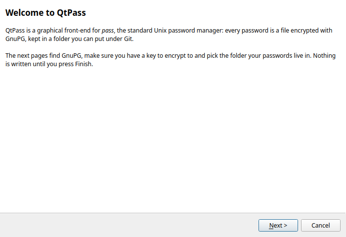
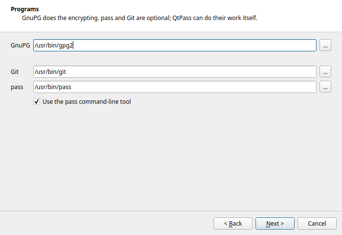
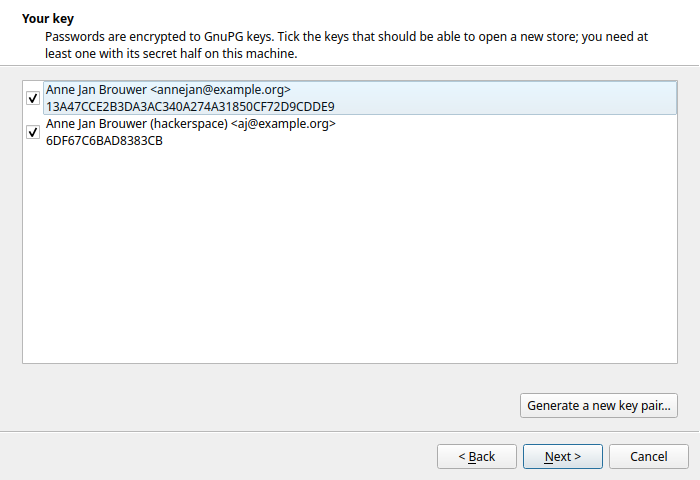
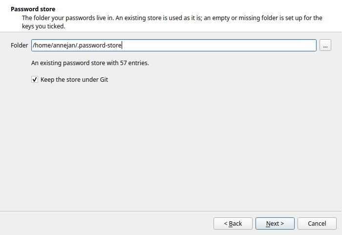
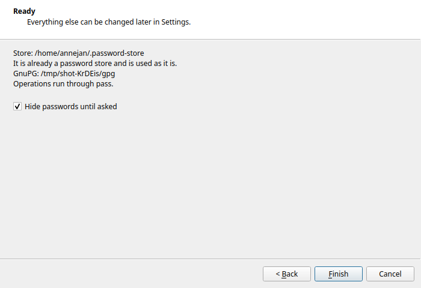
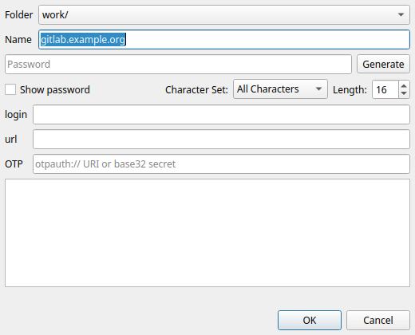
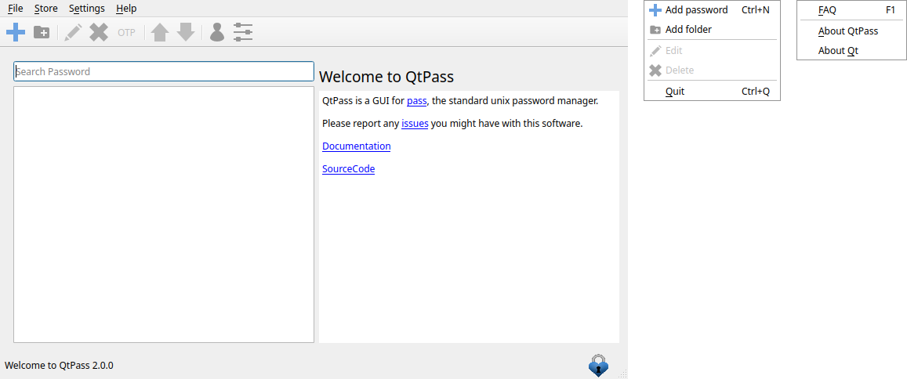
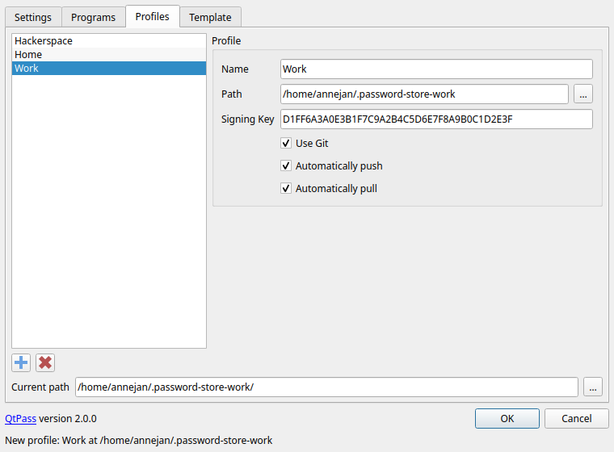

Current releaseQtPass 1.8.1
KDE Plasma with the Breeze theme; the pictures follow your colour scheme.


pass or the built-in Git and
GnuPG handling, password generation, clipboard, profiles.
In developmentComing in 2.0
The 2.0 branch is not released yet. These are captures of a development build, made without a window manager, so the windows have no title bars. Fifty-four seconds, no sound:
First start
A wizard replaces the old "please configure me" dialog: it finds
GnuPG, pass and Git, lists your secret keys or makes one,
and creates or adopts a password store.





Adding a password

A menu bar

Profiles

The tour in pieces
Everything on this page is in the 2.0 changelog, with the program that recorded the clips in qtpass-screenshots.